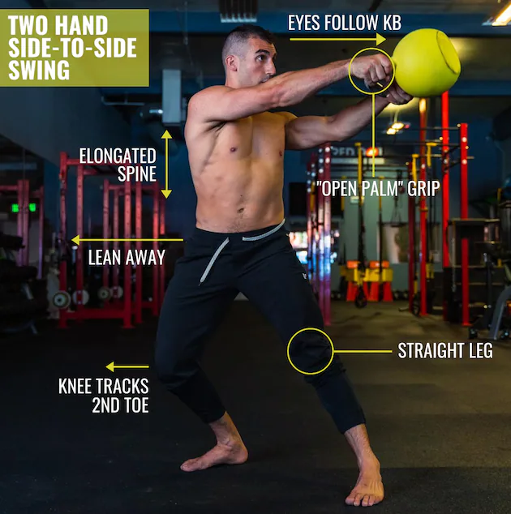

B241 · The best rotational kettlebell exercise to do
Hi {first_name},
Questions surrounding rotation training, as well as kettlebells are two super common topics I get asked often related to fitness and performance.
With that said I just created this rad graphic that I wanted to share with you that breaks down one of my favorite rotational kettlebell exercises - the Two Hand Side to Side Kettlebell Swing.
 In my opinion, performing rotational movements with kettlebells are not always the easiest to execute well. ⠀ You can read the full post and watch a mini video demo by clicking here.
On Monday, August 3rd at 2pmPST / 5pmEST I'll be hosting an Instagram Live with colleague Dr. Drew Vercellino where we'll break down this movement, as well as take questions on rotation training.
Here is a link to my Instagram @mike.salemi so you can tune in Live on Monday.
I hope to see you there!
Have a lovely evening, Mike
P.S. I'm SO PUMPED that in just a few days Kettlebell Lifestyle puppy is officially coming out and being launched in full capacity. This is only one of over 70 movements that you'll find broken down in much more detailed tutorial videos with me teaching you step-by-step, as well as in multi-level coached follow-along workouts included in Kettlebell Lifestyle. Geeeeeet ready! ; )⠀ |